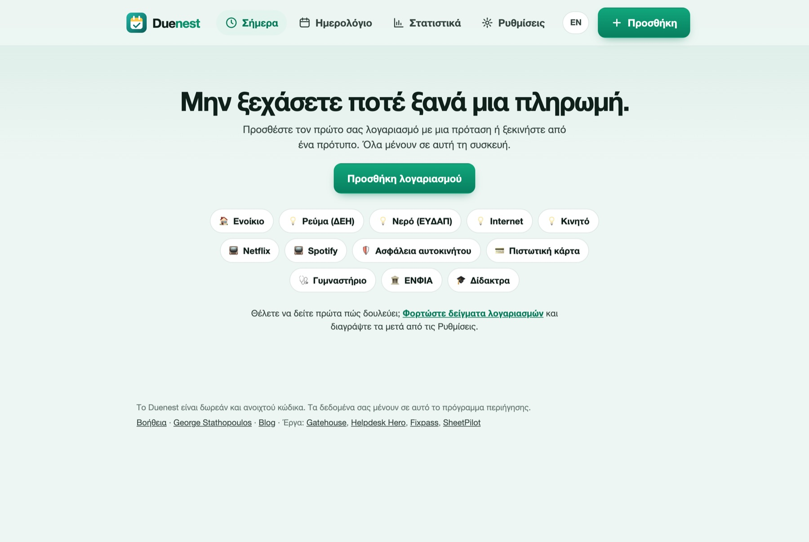
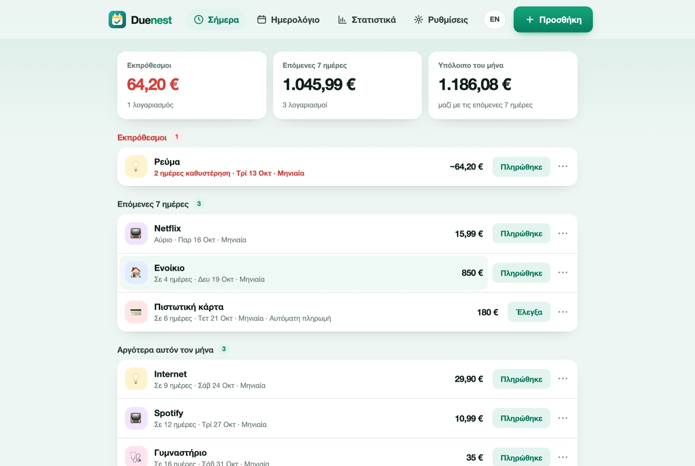

Ξεκινώντας
Το Duenest κρατά τους λογαριασμούς και τις συνδρομές σας σε ένα μέρος και σας λέει τι έρχεται. Αυτός ο οδηγός χρειάζεται περίπου δύο λεπτά.
Ανοίξτε το Duenest#
Ανοίξτε την εφαρμογή στο george-stathopoulos.github.io/duenest/app/?lang=el. Δεν εγκαθιστάτε τίποτα και δεν φτιάχνετε λογαριασμό. Δουλεύει σε κάθε σύγχρονο browser, σε κινητό, tablet ή υπολογιστή. Για να την έχετε στην αρχική οθόνη σαν εφαρμογή, δείτε το Εγκατάσταση στη συσκευή σας.

Προσθέστε τον πρώτο σας λογαριασμό#
Πατήστε Προσθήκη. Έχετε τρεις τρόπους να ξεκινήσετε:
- Γράψτε μια πρόταση, για παράδειγμα
Netflix 15,99 μηνιαία στις 3. Η φόρμα από κάτω συμπληρώνεται μόνη της και τα σήματα δείχνουν τι κατάλαβε το Duenest. Περισσότερα παραδείγματα. - Διαλέξτε ένα πρότυπο όπως Ενοίκιο, Ρεύμα ή Ασφάλεια αυτοκινήτου. Ορίζει όνομα, κατηγορία και επανάληψη. Εσείς βάζετε το ποσό.
- Συμπληρώστε τη φόρμα μόνοι σας.
Ελέγξτε τη φόρμα και πατήστε Αποθήκευση. Ο λογαριασμός εμφανίζεται στην οθόνη Σήμερα.

Αν θέλετε πρώτα να δείτε πώς δουλεύει, πατήστε Φορτώστε δείγματα λογαριασμών στην αρχική οθόνη. Μπορείτε να τα διαγράψετε αργότερα με Ρυθμίσεις → Διαγραφή όλων των δεδομένων μου.
Η οθόνη Σήμερα#
Η οθόνη Σήμερα δείχνει τρία σύνολα (εκπρόθεσμοι, επόμενες 7 ημέρες, υπόλοιπο του μήνα) και τους λογαριασμούς ομαδοποιημένους ανάλογα με το πότε λήγουν. Οι εκπρόθεσμοι είναι κόκκινοι και εμφανίζονται πρώτοι.

Σε κάθε λογαριασμό:
- Το Πληρώθηκε καταγράφει την πληρωμή και μεταφέρει έναν επαναλαμβανόμενο λογαριασμό στην επόμενη ημερομηνία. Σήμανση ως πληρωμένο.
- Το ⋯ ανοίγει αναβολή, παράλειψη, σύνδεσμο πληρωμής, αντιγραφή κωδικού, επεξεργασία και διαγραφή.
- Αν πατήσετε πάνω στον λογαριασμό, ανοίγει για επεξεργασία.
Λάβετε υπενθυμίσεις#
Το Duenest σας υπενθυμίζει με δύο τρόπους και αξίζει να ρυθμίσετε τον δεύτερο: δείτε τις Υπενθυμίσεις.
Πού να πάτε μετά#
- Προσθήκη λογαριασμών: προτάσεις, πρότυπα, επαναλήψεις και μεταβλητά ποσά
- Υπενθυμίσεις: ειδοποιήσεις και αρχείο ημερολογίου
- Ημερολόγιο και στατιστικά: τι λήγει και τι έρχεται
- Ιδιωτικότητα και δεδομένα: πού ζουν οι λογαριασμοί σας και πώς κρατάτε αντίγραφο
Χρειάζεστε ακόμα βοήθεια; Δείτε τις FAQ, ή ρωτήστε στο GitHub.